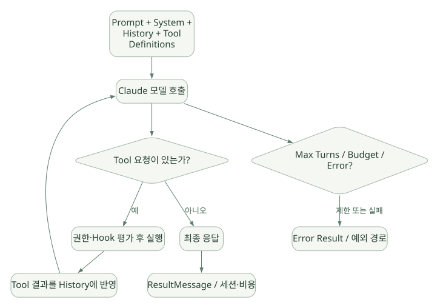

SECOND STUDY / 호출·프로세스·제어 프로토콜
호출·프로세스·제어 프로토콜
이번 단원의 읽는 관점
query와 지속 Client의 연결·정리 책임, Query 중재와 메시지 파싱을 따라갑니다.
살펴볼 경계요청 ID·Callback ID·Result와 원시 스트림 종료를 구분하세요.
이 페이지의 세부 목차
11. 메시지 파싱과 ResultMessage의 의미#
message_parser.py는 JSON 데이터를 SystemMessage, AssistantMessage, UserMessage, ResultMessage, 각종 Observability/Task 이벤트 등 Python 객체로 변환한다. 모델의 일부 텍스트 델타를 받으려면 partial messages 관련 옵션이 필요하다. [SRC: C06; DOC: D02]
ResultMessage는 무조건 성공이 아니다. subtype이 success, error_max_turns, error_max_budget_usd 등 무엇인지 평가해야 한다. 통상 한 요청 루프의 종료 신호이고 세션·비용·사용량을 전달하지만, 원시 수신 스트림에는 뒤따르는 System 이벤트가 올 수 있다. 따라서 'Result를 봤으니 모든 이벤트 스트림이 완전히 닫혔다'고 일반화하면 안 된다. [DOC: D02]
ClaudeSDKClient.receive_response()는 편의를 위해 ResultMessage에서 iteration을 끝내지만, receive_messages()는 원시 연결 메시지를 계속 수신할 수 있다. [SRC: C02]
12. Agent Loop의 정확한 소유권과 종료 경계#
CLI가 관장하는 논리 흐름 [DOC: D02]:
가로로 이동해서 읽을 수 있습니다. 도식 크게 보기 ↗

원문의 학습용 도식입니다. 연결 방향·분기 조건·점선·쌍방향 연결을 보존해 세로로 배치했습니다. 실제 구현·의사코드·해석의 구분은 본문을 함께 읽으세요.
도식 원문 보기 (Mermaid)
flowchart TD
A[Prompt + System + History + Tool Definitions] --> B[Claude 모델 호출]
B --> C{Tool 요청이 있는가?}
C -- 예 --> D[권한·Hook 평가 후 실행]
D --> E[Tool 결과를 History에 반영]
E --> B
C -- 아니오 --> F[최종 응답]
F --> G[ResultMessage / 세션·비용]
B --> H{Max Turns / Budget / Error?}
H -- 제한 또는 실패 --> I[Error Result / 예외 경로]핵심 용어 구별:
- LLM Turn: 모델이 한 번 응답하고 Tool을 포함할 수도 있는 반복 단위.
- Tool Call: 하나의 Turn에서 복수 발생 가능. Turn 수 = Tool 호출 수가 아니다.
- Run/Response: 사용자가 요청한 한 번의 작업 완료 또는 제한 종료.
- Session: 여러 Run/Response에 걸친 누적 대화 기록.
- Subagent task: 별도 실행 컨텍스트를 갖는 하위 작업이며 주 Agent의 종료·비용과 연결.
max_turns는 Turn 수를 제한하지만 완전한 시스템 kill switch가 아니다. max_budget_usd도 사후 모델 사용량으로 집계되는 비용 제한이므로 초과 비용이 절대 0이라는 보장은 없다. [DOC: D02]